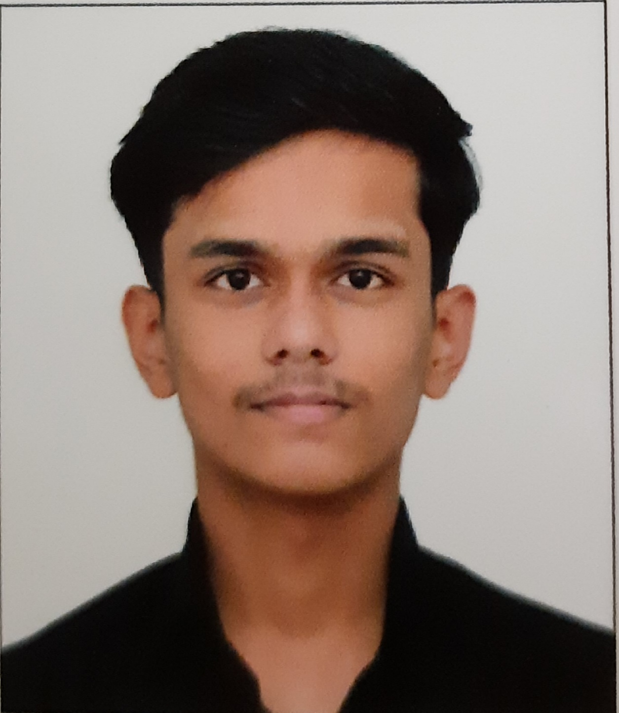

My name is Aditya Rajesh Bawangade and I live in Nashik. I am currently pursuing my B.tech. in CSE from IIT GOA. My hobbies are writing screenplays, poems and reading old ballads. I also like to workout. I have quite a few friends, but they are very amazing and supportive. My primary goal in life is to leave an impact on the society for the greater good. My favorite quote is "The best is yet to be."
| Year of graduation | Degree | Institution |
| 2025 | B.tech in CSE | IIT GOA |
| 2021 | Class 12 | Matoshri college |
| 2019 | Class 10 | St. Francis High School |
| Extracurricular activities | Swimming, football, Writing, sketching | Wikipedia page for football |
| Achievements | Debates, QUizzes, Sketching contests, speeches | Wikipedia page for deates |